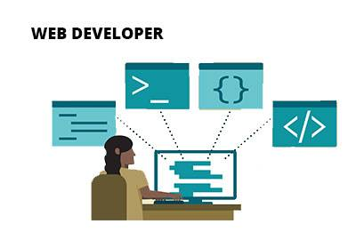
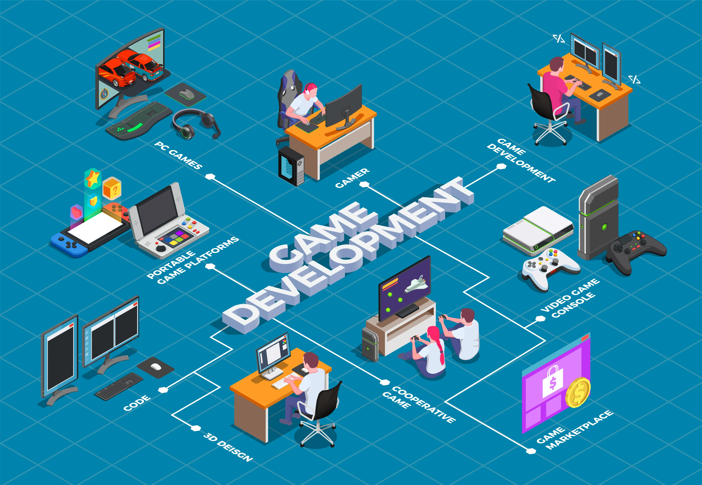

Portfolio
Explore projects grouped by category. Click a category to view screenshots, demos, and downloads.
Featured categories

Website Projects
Responsive sites, landing pages, and web apps with clean interactions and visual polish.

Game Development
Unity prototypes, mechanics experiments, and playable demos with a design-first mindset.
Mobile Development
Android apps and small utilities built for reliability, usability, and mobile workflows.